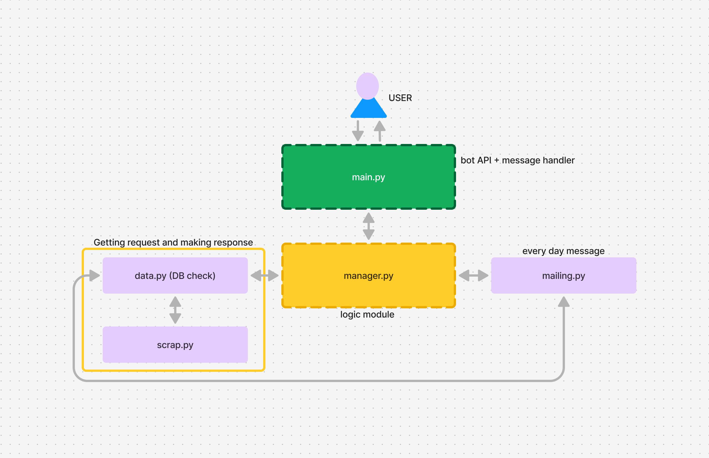
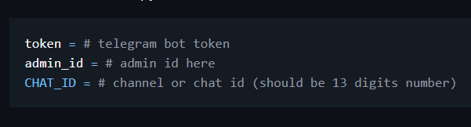
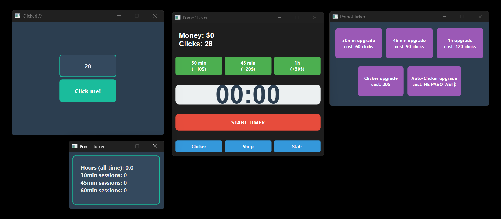
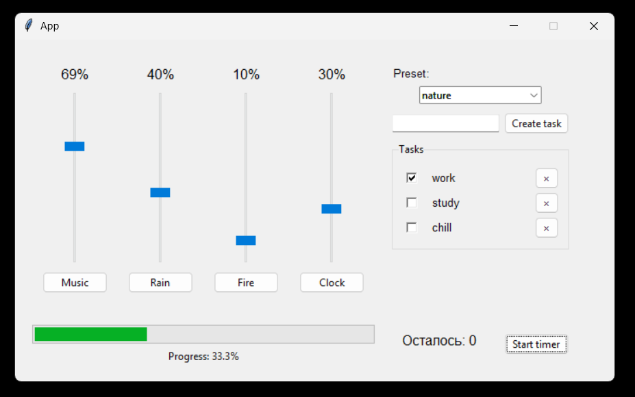

my repos
SibSAUSchedule
I started this project when I entered SibSAU. I had already made a bot that sent schedules when I was in school, so when I enrolled, the idea seemed obvious. Among the interesting parts, I'd like to highlight the difficulties with parsing the schedule (I really didn't want to resort to it, but after trying many options, something only started working when I used xpath). In this project, I'm particularly proud of how I built the notification system and, in general, organized the optimized logic for data collection for notifications.

TelegramChannelSuggestionBot
I decided to create this bot because I saw many popular Telegram groups/channels that operated through a submission system (i.e., users first contacted a bot to submit information, and then, after admin approval, the post was published in the channel/group). I realized that while I understood the basics of bots, I had little idea how to implement such a system. Moreover, there was a clear demand for it, so I decided to start the project.
Everything here is kept as simple as possible. You can see a variety of database queries and a nicely implemented admin interface that requires minimal effort from admins when handling users.

lf-crlf
Once while programming, I ran into a git issue where I kept getting endless complaints about LF and CRLF line endings. It really annoyed me, so I decided to write a script that could quickly convert an entire file or directory to one consistent style. I also thought it would be nice to always have such a script on hand. For easy access, I decided to publish it as a PyPI library. What I made can hardly be called a full-fledged library, of course, but it was interesting to get acquainted with the publishing system for such projects.
PomoClicker
At some point, I became interested in whether it was possible to come up with a Pomodoro timer that you'd actually feel motivated to start (beyond just the motivation to get work done). In my opinion, such a timer could really help people given the current "ADHD trends." I decided that a cool solution would be to use people's own ADHD against them. So I made a clicker game where you can only progress and upgrade if you're being productive with Pomodoro sessions. For this project, I used PyQt6.

work-zone
At some point, I started using the lofizen service while studying or working. I liked putting on various background noises and calm music, and I found it convenient to customize. But my options for actions were very limited on that site, and most interesting features (like a notepad for tasks and multiple sound options) were only available with a paid subscription. I decided I had to make my own version that would have everything I needed. This time, unlike with Pomoclicker, I decided to use tkinter.
